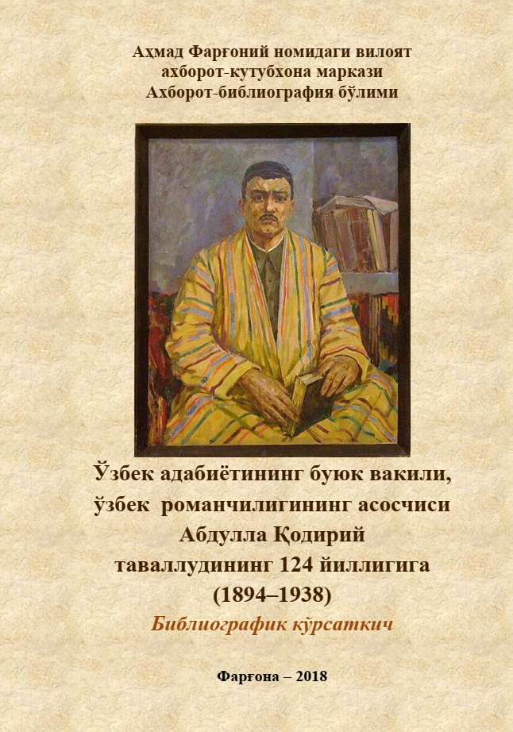

«Ikki emas, to'rt til lozim»
Turkiston xalqi uchun ona tili (turkiy/o'zbekcha), mintaqaviy madaniyat tili (tojikcha), davlat va xalqaro aloqa tillari (ruscha va arabcha/yevropa tillari)ni o'rganish zarurligi haqida.
«Tilimiz» (Ona tili sofligi haqida)
O'zbek tiliga chetdan kirib kelgan keraksiz so'zlardan tozalash, qadimiy turkiy ildizlarni tiklash va yangi ilmiy atamalarni milliy tilda yaratish haqidagi manifest.

«Imlo masalasi va maktablarimiz»
Turkistondagi eski arab yozuvidagi qiyinchiliklar, tovushlarning yetishmasligi va uni isloh qilish lozimligi to'g'risidagi amaliy takliflar.
 Tilshunoslik
Tilshunoslik
Fitratning imlo qoidalari bo'yicha takliflari
O'zbek tili tovush tizimi, unlilar muammosi va milliy yozuvni isloh qilish bo'yicha ilmiy xulosalar.
O'qish
Lug'atAshurali Zohiriy: Milliy tilni begona so'zlardan tozalash
O'zbek tilining boy lug'at zaxirasidan foydalanish va yangi atamalarni shakllantirish tamoyillari.
O'qish Adabiy til
Adabiy til
Cho'lpon va jonli xalq tilining adabiyotga kirib kelishi
Cho'lpon nasri va she'riyatidagi xalqona soddalik, go'zal o'xshatishlar va uslubiy joziba tahlili.
O'qish